HOW TO MOVE WITH PETS🐱
Moving can be one of the most stressful things a person can do. This event can be just as traumatic for your pets. Having a plan for a pet-friendly transition will keep you calm and your pets as comfortable as possible.
1. Make A Moving Schedule
Make a plan and stick to it. Once you have a plan, you can care for your pets in the best possible way during this stressful time.
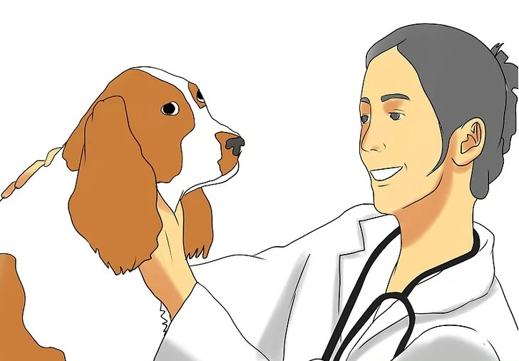
2. Call The Vet And Schedule An Appointment As Soon As You Can
Don't Wait Until The Last Minute
- Tell your vet you are moving. Ask your vet if they know if a vet in your new hometown they can suggest. If your pet has a condition that may worsen after you move, you should consult your vet about the proper treatment until you can find a new vet.
- If your pets are due or almost due for shots, now is a good time to get them. It may take you a while to find a new vet and you may need to have updated shot records for boarding, traveling, etc.
- Get a sedative for your pet. If you are traveling long distances, flying, exposing your pet to a means of transportation they've never experienced before, or traveling with children, you should ask your vet for a sedative--unless the pet is traveling in the cargo area of an airplane, in which case sedatives should be avoided. Most of these are quite mild and won't really knock the pet out but will certainly take the edge off. This is also helpful if you have a pet that you know doesn't travel well, is cage aggressive or could bite movers. If you need something more sedating, you should discuss this with your vet. Make sure you understand how to give proper dosages.
- Get copies of vet records and vaccination certificates. The rabies tag will not serve as proof of vaccination. You may need to show the documentation. Make sure your pets get the kennel cough vaccine or other vaccines that will be necessary for travel or boarding. Even if you don't normally board your pet you should consider those vaccines in case something happens on the road or during your move (such as an accident, blizzard or family emergency). Be specific and ask your vet if there is anything else needed that might be requested. Ask what you will need to do to have these vaccinations recognized in your new state or if they will carry over. Chances are if you need a vaccine and don't have it, you'll be in horrible situation when you find out you should have gotten it. Pay the extra $5-$10 and you won't have to run back to the vet for an additional vaccine.
- If your pet is traveling by air, you will probably need a health certificate from the vet, and there may be a time requirement (for example, the health certificate may need to be dated within 30 days of the travel date).
- Get your pet's prescriptions refilled and get a prescription written so you can take it with you and present it to your new pharmacy. Pick up any prescription pet foods. If your pet has specific food needs make sure you pick it up before you leave. You don't want to be lost in a strange town trying to find an open pet store.
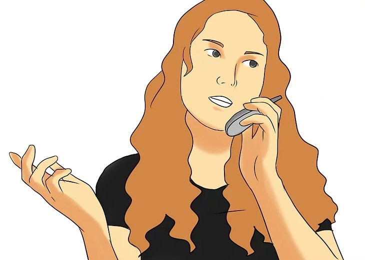
3. Verify That Your New Accommodations Are Pet-Friendly
This should have been done before you made the decision to move, but it never hurts to double check. Verify that your apartment building, if you have one, is pet-friendly. While house hunting, look for a house with a backyard if you have a dog, or a nearby park.
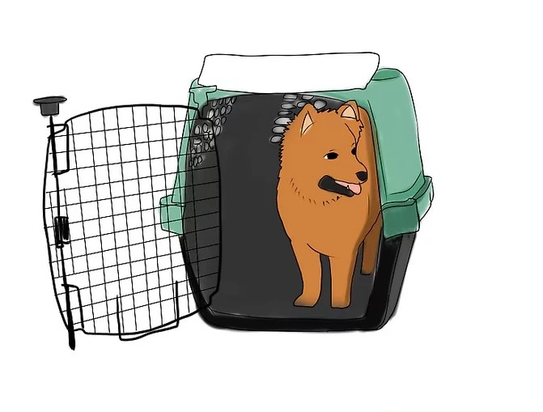
4. Make Your Airline Reservations Directly With The Airline If You Are Flying To Your New Destination With Your Pet
Cats and small dogs can often fly in a small carrier with you in the cabin. Larger pets and large carriers may require transport in the cargo area. The latter is probably the most stressful and dangerous mode of transportation for your pet--see Warnings below, and check out How to Minimize Risk to a Pet in the Cargo Area of an Airplane.
- Confirm they accept pets. Keep in mind airlines have very specific regulations for pets transported in the cargo area. They will not allow a pet to fly in temperatures in departure, layover or destination cities if the temperatures are too hot or too cold. It may be a pleasant 75 °F (24 °C) in Atlanta but it may be 40 °F (4 °C) in Chicago. The decision may not be made until the day of your flight.
- Travel on the same flight as your pet if your pet is going to be in the cargo area. Ask the airline if you can watch your pet being loaded and unloaded into the cargo hold. When you board the plane, notify the captain and at least one flight attendant that your pet is traveling in the cargo hold. If the captain knows that pets are on board, he or she may take special precautions.
- Find out what additional cost is involved.
- Inquire if you must fax your vet records beforehand (always keep a copy with you).
- Ask what specific maximum carrier measurements are allowed. Your pet should be able to turn around freely and not be cramped. Food and water should be available for cargo transported animals. You may be able to buy a cheaper carrier online so shop around if you have time. Also try borrowing one from a friend or buying one from a friend. Chances are these aren't used often and you may be able to get a cheaper one if you just ask around.
- Plan to arrive at the airline extra early. Allow time for potty breaks before you enter and give your pet the sedative.
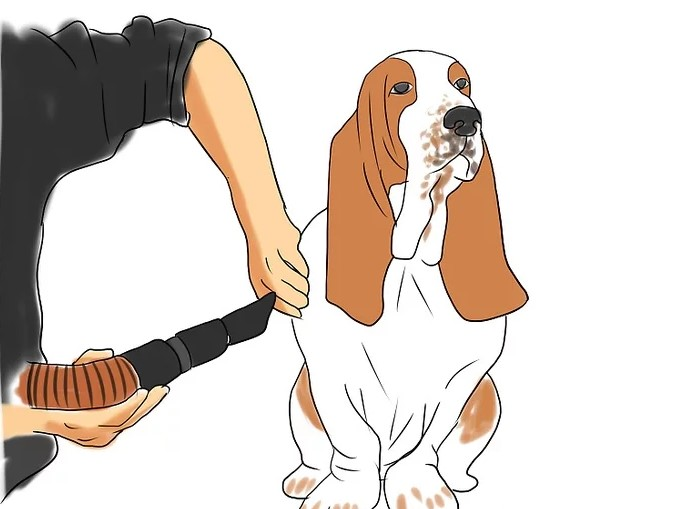
5. Schedule Boarding For Your Moving Day
Having boxes scattered, furniture in disarray and the family stressed also stresses your pets. With people going in and out, your pets may escape. Even the most well behaved pet may flee because of the stress. It is easy for a pet to get out unnoticed with all of the confusion. If the pet is very stressed they may resist coming to your call. Consider taking your pet to the kennel 2 days before and schedule the pick up on departure day after the trucks are loaded and right before you leave. Since most people move on weekends and that's when most people board their pets, you should schedule your boarding as soon as you know your moving day. Don't wait until the last minute because you may be out of luck!
If you don't board your pet, you should arrange for a closed off room that will not have in and out foot traffic. Warn movers, family and children to stay out of room and not to open the door. Secure your pet at all times when doors, attics and windows are open for moving.
6. Schedule Your Dogs To Be Groomed The Week You Leave
They will smell clean, their nails will be trimmed so not to ruin your car's interior and you won't be taking a dirty dog into a new home. Consider having long hair dogs shaved or heavily trimmed. You may also want to give your cats a good brushing, since they might shed more when they're stressed.
- Let the groomer know you are moving. They may have suggestions about the groom that will make traveling with your dog easier such as shaving a particularly furry and shed prone dog. You can also request they do extra brushing to remove as much shedding as possible, trim the nails and take other measures to help with odors.
- Be sure you request they are groomed early enough in the day to be completely dry and well brushed by the scheduled pick up time. (You don't want the car to smell like a wet dog.)
- If you are sensitive to scents, make sure you agree on the fragrances/cologne spray used. Some shampoos also help with shedding and itching. Ask your groomer. You don't want your dog itching for the entire trip. Not only is it noisy but it is also hard on the pet since the dog may not have enough room to scratch.
- Make your grooming appointment early and don't wait until the last week. You're making special requests and you should give them plenty of notice about what you want done so they can schedule the appropriate amount of time and personnel needed.
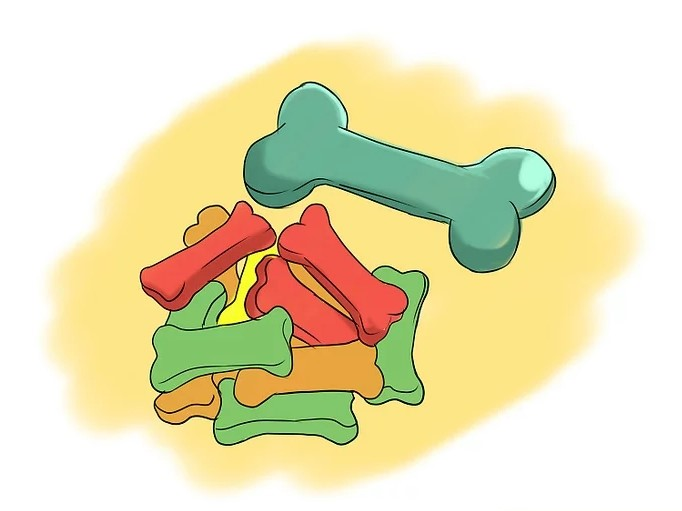
7. Research Your Route If You Driving
If you're going to stay anywhere overnight, make sure you know which hotels are pet friendly. Some hotels are pet friendly but limit pets to certain rooms. Make your reservations early to make sure you can bring your pet and get one of those rooms. The most important thing is to speak with someone directly at the hotel. Make a note of their name and department. Get a direct phone number if you can. Do not make assumptions based on what you read online! Hotels often change their policies and may have stopped taking pets. The special requests you make in an online reservation are sometimes not read. You don't want to try to check in and be turned away. Strange city, no hotel reservations can be a huge headache. Plan ahead.
- Always put the do not disturb sign (some hotels offer pet signs) on a hotel room door if your pets are inside. Housekeeping could accidentally let them escape. Your pets could also scare people who are afraid of dogs. You should try to keep them crated. Don't leave them alone if they bark as it may disturb the neighbors.
- Remember to tip hotel staff if they are particularly helpful with the care of your pet. Even offer an extra tip upfront if you are staying several days. This may help insure your pets get that extra bit of attention in the pet friendlier hotels. This includes housekeeping if they are having to work around the pets. You may need to coordinate a time with housekeeping to remove the pets from the room so it can be cleaned daily.
- Do everything you can to prevent your pet from having accidents on the floor or being destructive in the hotel. The hotel may be pet friendly but chances are the fine print says you are responsible for damages caused. You don't want the hotel to charge you for $4000 in new carpet.
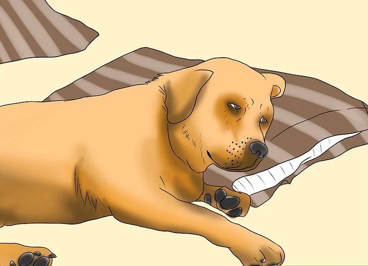
8. Make A List Of Things You Will Need For The Road And Make Sure They Aren't Packed To Go On The Truck
If you're missing something on your list, pick it up now and not wait until move day. Instead of throwing away tattered linens and pillows, you can save one or two for the pet carrier. See the "Things You'll Need" lists below.
- Will your pet carrier fit in the car? You may need to measure and get a new one.
- Set a small suitcase or bag aside for the traveling pets.
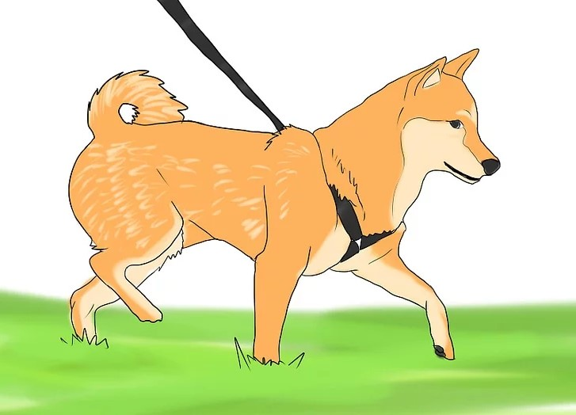
9. Spoil Your Pet During This Stressful Time
Let them sleep in the bed, take them for walks, take time out to play and feed them their favorite food or treats. It will improve their spirits for the actual move day. Pets are often the last thing on people's minds during a stressful move. The pets begin to feel unloved and neglected which can bring about more stress and bad behaviors.
- It is not uncommon for pets to refuse food and water while away from home or in a stressful situation. Keep a close eye on their intake. Offer them special treats and their favorite foods to encourage them to eat. Try to take time every few hours during moving and travel to walk your pet, set out food and water and try to get them to drink. If their appetite doesn't improve, you should contact a vet. Some sedatives can cause your pets to become thirsty and if not addressed they become dehydrated. Make sure they have access to plenty of water.
- Keep a log of when and how much sedative you give. It will prevent you from double dosing should you forget in all the chaos of moving.
On Moving Day
1. Try To Keep To Your Normal Schedule As Much As Possible
Routines are very important, especially when so much else around them is changing. Feed and/or walk your pet at the same time that you would normally.
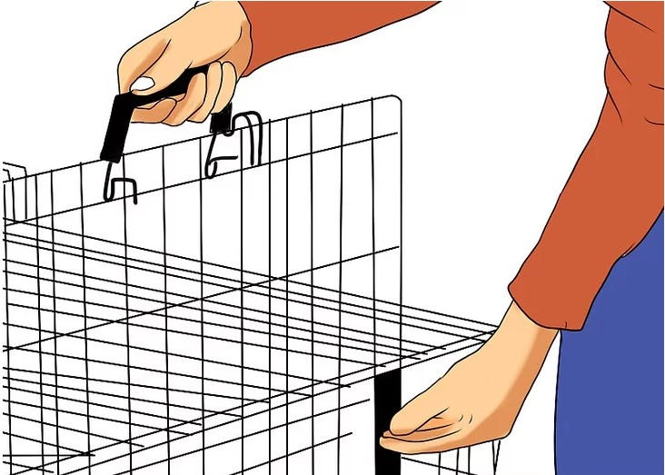
2. Go Into Your New Dwellings First Before You Bring Your Pet In.
If you don't have anywhere to leave your pet or are traveling alone, keep your pet on a leash or in a carrier at first. Inspect your new home for anything that might be harmful, such as wet paint, sawdust, broken glass or bare wires.
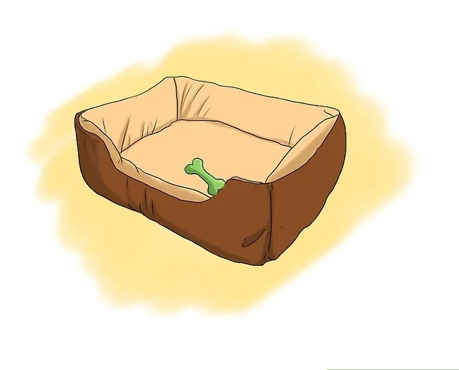
3. Once You Are Sure That It Is Safe, Release Your Pet From The Carrier Or The Leash
Make sure that all doors and windows are closed for the time being. Allow your pet to get used to your new dwellings.
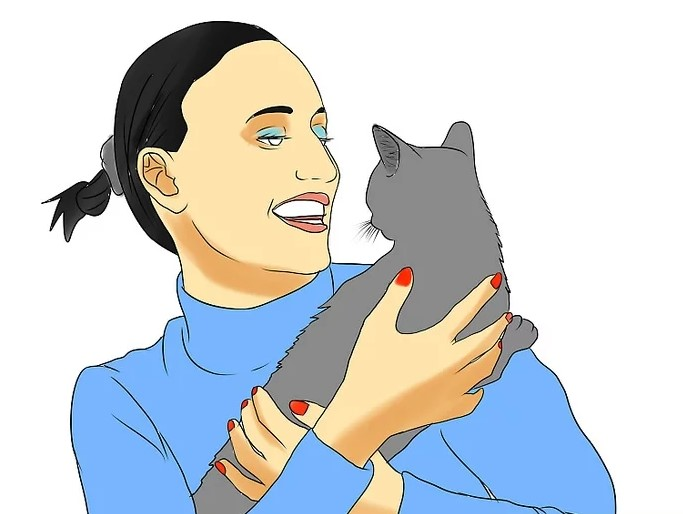
4. Lay Out Familiar Items, Such As A Familiar Bed And Toys.
5. Take Time Out To Play With Your Pet
Give them time to associate their new home as a positive place.
6. Make Sure That You Update Their ID Tags
If your pet is microchipped, make sure that information is changed as well. Since you are in a new place, it will be easier for your pet to get lost as they are in a new environment.
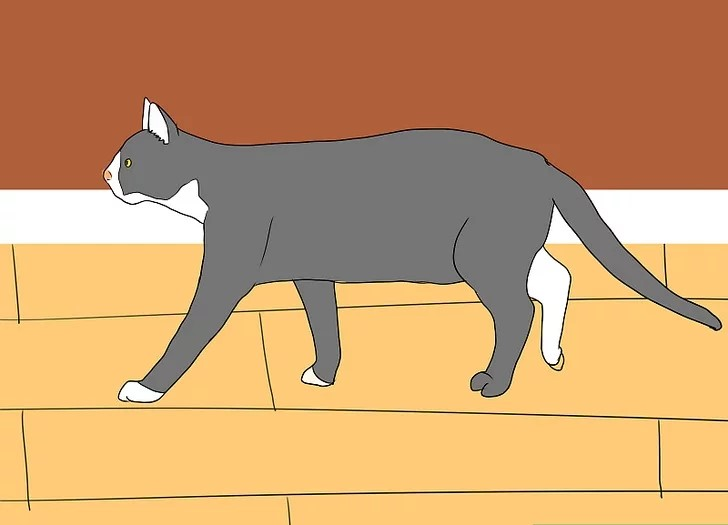
7. Go Over Your New Yard Very Carefully And Make Sure It Is Dog Or Cat Proof, There Are No Harmful Items Or Chemicals, The Gates Close, The Fence Is Secure And Your Pets Can't Escape.
Your pet may be confused with the new surroundings. Have patience and understand this is a confusing time.
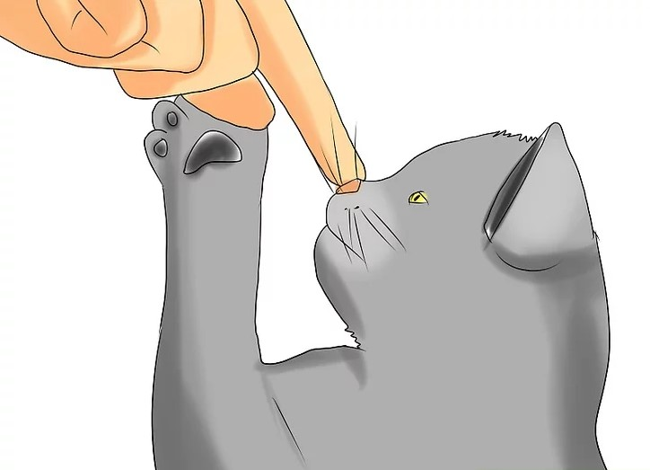
8. For Outdoor Cats, Keep Them Inside For A Few Nights Until They Get Acclimatized.
Gradually allow them to spend more time outside.
9. Enjoy Your New Home With Your Pet!